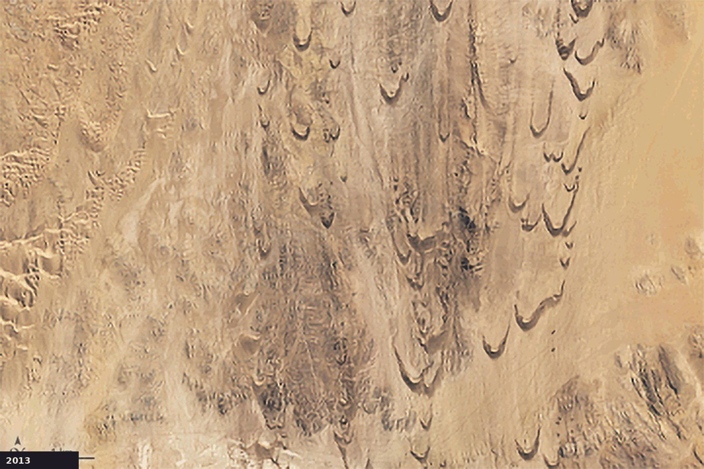
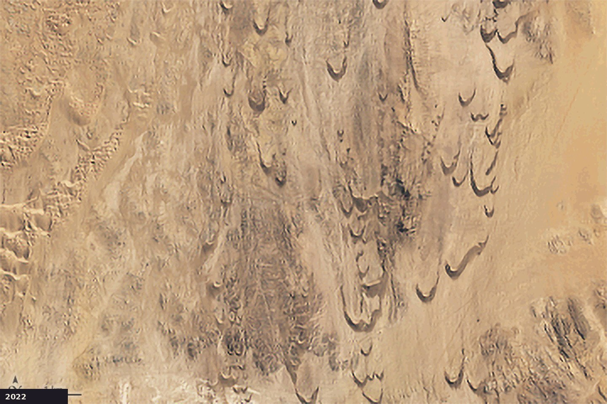
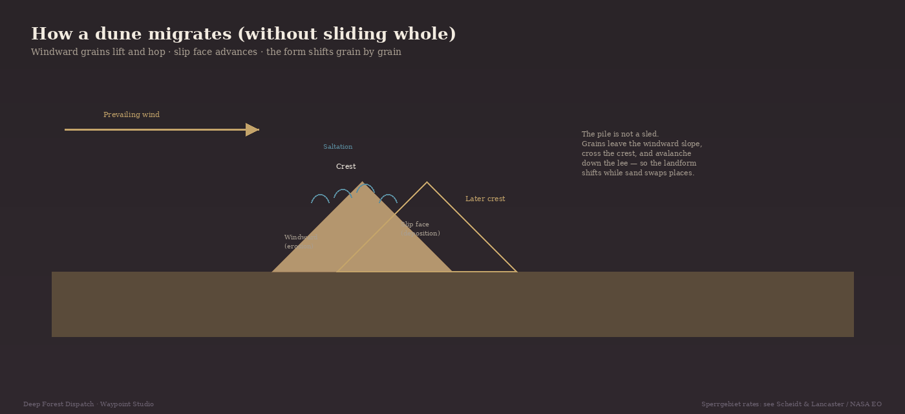

Same place, different year
In Namibia’s Sperrgebiet — the southern Namib — crescent barchans and transverse ridges sit in a fierce south-to-southwest wind corridor. NASA Earth Observatory assembled annual Landsat 8 and 9 scenes from 2013 to 2022. Drag the handle: the dunes do not stay put.


Researchers using ASTER and COSI-Corr co-registration report average migration in this region on the order of ~7–32 meters per year, with large dunes near ~9 m/yr and some smaller dunes much faster — locally reported up to ~83 m/yr. Forms can persist while positions shift; smaller dunes may appear and vanish.
Why this corridor
The southern Namib is a high-energy wind regime. Dark barchan trains march northward along sand-transport pathways feeding the Namib Sand Sea. That combination — persistent wind, measurable rates, and a clean satellite record — is why this location clears an evidence gate that a generic “dunes move” essay would fail.
Grain by grain — not a sliding pile
A dune does not skate across the desert as a solid object. Wind lifts and hops grains on the windward slope (saltation), eroding that face. Grains crest and avalanche down the lee slip face. Redeposition advances the form. Repeat endlessly and the landform migrates while the sand inventory turns over.

What the satellites do not invent
These frames are evidence of displacement in a published, registered sequence — not a decorative wipe on one photo. Rates quoted here come from peer-reviewed remote-sensing work and NASA EO’s summary of that research, not from hand-measuring pixels on this page.
Other deserts host migrating dunes. This corridor simply offers one of the clearest public demonstrations: same geography, years apart, motion you can see.